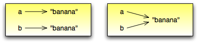
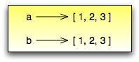
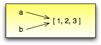
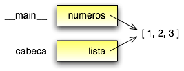
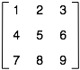

Tópicos
Uma lista é um conjunto ordenado de valores, onde cada valor é identificado por um índice. Os valores que compõem uma lista são chamados elementos. Listas são similares a strings, que são conjuntos ordenados de caracteres, com a diferença que os elementos de uma lista podem possuir qualquer tipo. Listas e strings XXX e outras coisas que se comportam como conjuntos ordenados XXX são chamados seqüências.
Existem várias maneiras de criar uma nova lista; a mais simples é envolver os elementos em colchetes ([ e ]):
>>> [10, 20, 30, 40]
>>> ['spam', 'bungee', 'swallow']
O primeiro exemplo á uma lista de quatro inteiros. O segundo é uma lista de três strings. Os elementos de uma lista não necessitam ser do mesmo tipo. A lista a seguir contém uma string, um valor float, um valor inteiro, e mirabile dictu uma outra lista:
>>> ['alo', 2.0, 5, [10,20]]
Uma lista dentro de outra lista é dita estar aninhada.
Listas que contém inteiros consecutivos são comuns, então Python fornece uma maneira simples de criá-los:
>>> range(1,5)
[1, 2, 3, 4]
A função range pega dois argumentos e devolve uma lista que contém todos os inteiros do primeiro até o segundo, incluindo o primeiro mas não incluindo o segundo!
Existem outras formas de range. Com um argumento simples, ela cria uma lista que inicia em 0:
>>> range(10)
[0,1, 2, 3, 4, 5, 6, 7, 8, 9]
Se existe um terceiro argumento, ele especifica o espaço entre os valores sucessivos, que é chamado de tamanho do passo. Este exemplo conta de 1 até 10 em passos de 2:
>>> range(1, 10, 2)
[1, 3, 5, 7, 9]
Finalmente, existe uma lista especial que não contém elementos. Ela é chamada lista vazia, e sua notação é [].
Com todas estas formas de criar listas, seria decepcionante se não pudéssemos atribuir valores de listas a variáveis ou passar listas como parâmetros a funções. Felizmente, podemos.
>>> vocabulario = ['melhorar', 'castigar', 'defenestrar']
>>> numeros = [17, 123]
>>> vazio = []
>>> print vocabulario, numeros, vazio
['melhorar', 'castigar', 'defenestrar'] [17, 123] []
A sintaxe para acessar os elementos de uma lista é a mesma que a sintaxe para acessar os caracteres de uma string XXX o operator colchete ([]). A expressão dentro dos colchetes especifica o índice. Lembre-se que os índices iniciam em 0:
>>> print numeros[0]
>>> numeros[1]= 5
O operador colchete pode aparecer em qualquer lugar em uma expressão. Quando ele aparece no lado esquerdo de uma atribuição, ele modifica um dos elementos em uma lista, de forma que o um-ésimo elemento de numeros, que era 123, é agora 5.
Qualquer expressão inteira pode ser utilizada como um índice:
>>> numeros[3-2]
5
>>> numeros[1.0]
TypeError: sequence index must be integer
Se você tentar ler ou escrever um elemento que não existe, você recebe um erro de tempo de execução (runtime error):
>>> numeros[2]=5
IndexError: list assignment index out of range
Se um índice possui um valor negativo, ele conta ao contrário a partir do final da lista:
>>> numeros[-1]
5
>>> numeros[-2]
17
>>> numeros[-3]
IndexError: list index out of range
numeros[-1] é o último elemento da lista, numeros[-2] é o penúltimo e numeros[-3] não existe.
É comum utilizar uma variável de laço como um índice da lista:
>>> cavaleiros = ['guerra', 'fome', 'peste', 'morte']
i = 0
while i < 4:
print cavaleiros[i]
i = i + 1
Este laço while conta de 0 até 4. Quando a variável do laço i é 4, a condição falha e o laço se encerra. Desta forma o corpo do laço é executado somente quando i é 0, 1, 2 e 3.
Em cada vez dentro do laço, a variável i é utilizada como um índice para a lista, exibindo o i-ésimo elemento. Este padrão de computação é chamado de percurso na lista.
A função len devolve o comprimento de uma lista. É uma boa idéia utilizar este valor como o limite superior de um laço ao invés de uma constante. Desta forma, se o tamanho da lista mudar, você não precisará ir através de todo o programa modificando todos os laços; eles funcionarão corretamente para qualquer tamanho de lista:
>>> cavaleiros = ['guerra', 'fome', 'peste', 'morte']
i = 0
while i < len(cavaleiros):
print cavaleiros[i]
i = i + 1
A última vez que o corpo do laço é executado, i é len(cavaleiros) - 1, que é o índice do último elemento. Quando i é igual a len(cavaleiros), a condição falha e o corpo não é executado, o que é uma boa coisa, porque len(cavaleiros) não é um índice legal.
Embora uma lista possa conter uma outra lista, a lista aninhada ainda conta como um elemento simples. O comprimento desta lista é quatro:
>>> [`spam!', 1, ['Brie', 'Roquefort', 'Pol lê Veq'], [1, 2 3]]
Como um exercício, escreva um laço que percorra a lista anterior e exiba o comprimento de cada elemento. O que acontece se você manda um inteiro para len?
in é um operador lógico que testa se um elemento é membro de uma seqüência. Nós o utilizamos na Seção 7.10 com strings, mas ele também funciona com listas e outras seqüências:
>>> cavaleiros = ['guerra', 'fome', 'peste', 'morte']
>>> 'peste' in cavaleiros
True
>>> 'depravação' in cavaleiros
False
Uma vez que ‘peste’ é um membro da lista cavaleiros, o operador in devolve verdadeiro. Uma vez que depravação não está na lista, in devolve falso.
Podemos utilizar também o not em combinação com o in para testar se um elemento não é um membro de uma lista:
>>> ``depravação`` not in cavaleiros
True
O laço for que vimos na Seção 7.3 também funciona com listas. A sintaxe generalizada de um laço for é:
for VARIÁVEL in LISTA:
CORPO
Esta declaração é equivalente a:
>>> i = 0
while i < len(LIST):
VARIABLE = LIST[i]
XXX BODY
i = i + 1
O laço for é mais conciso porque podemos eliminar a variável do laço, i. Aqui está o laço anterior escrito com um`laço for:
>>> for cavaleiro in cavaleiros:
print cavaleiro
Quase se lê como Português: “For (para cada) cavaleiro in (na lista de) cavaleiros, print (imprima o nome do) cavaleiro.”
Qualquer expressão de lista pode ser utilizada num laço for:
>>> for numero in range(20):
if numero % 2 == 0:
print numero
>>> for fruta in ["banana", "abacaxi", "laranja"]:
print "Eu gosto de comer " + fruta + "s!"
O primeiro exemplo exibe todos os números pares entre zero e dezenove. O segundo exemplo expressa o entusiasmo por várias frutas.
O operador + concatena listas:
>>> a = [1, 2, 3]
>>> b = [4, 5, 6]
>>> c = a + b
>>> print c
[1, 2, 3, 4, 5, 6]
Similarmente, o operador * repete uma lista um número dado de vezes:
>>> [0] * 4
[0, 0, 0, 0]
>>> [1, 2, 3] * 3
[1, 2, 3, 1, 2, 3, 1, 2, 3]
O primeiro exemplo repete [0] quatro vezes. O segundo exemplo repete a lista [1, 2, 3] três vezes.
A operação de fatiamento que vimos na Seção 7.4 também funciona sobre listas:
>>> lista = ['a', 'b', 'c', 'd', 'e', 'f']
>>> lista[1:3]
['b', 'c']
>>> lista[:4]
['a', 'b', 'c', 'd']
>>> lista[3:]
['d', 'e', 'f']
>>> lista[:]
['a', 'b', 'c', 'd', 'e', 'f']
Diferente das strings, as listas são mutáveis, o que significa que podemos modificar seus elementos. Utilizando o operador colchete no lado esquerdo de uma atribuição, podemos atualizar um de seus elementos:
>>> fruta = ["banana", "abacaxi", "laranja"]
>>> fruta[0] = "abacate"
>>> fruta[-1] = "tangerina"
>>> print fruta
['abacate', 'abacaxi', 'tangerina']
Com o operador de fatiamento podemos atualizar vários elementos de uma vez:
>>> lista = ['a', 'b', 'c', 'd', 'e', 'f']
>>> lista[1:3] = ['x', 'y']
>>> print lista
['a', 'x', 'y', 'd', 'e', 'f']
Também podemos remover elementos de uma lista atribuindo a lista vazia a eles:
>>> lista = ['a', 'b', 'c', 'd', 'e', 'f']
>>> lista[1:3] = []
>>> print lista
['a', 'd', 'e', 'f']
E podemos adicionar elementos a uma lista enfiando-os numa fatia vazia na posição desejada:
>>> lista = ['a', 'd', 'f']
>>> lista[1:1] = ['b', 'c']
>>> print lista
['a', 'b', 'c', 'd', 'f']
>>> lista[4:4] = ['e']
>>> print lista
['a', 'b', 'c', 'd', 'e', 'f']
Utilizando fatias para remover elementos pode ser complicado, e desta forma propenso a erro. Python fornece uma alternativa que é mais legível.
del remove um elemento de uma lista:
>>> a = ['um', 'dois', 'tres']
>>> del a[1]
>>> a
['um', 'tres']
Como você deveria esperar, del trata valores negativos e causa erros de tempo de execução se o índice estiver fora da faixa.
Você também pode utilizar uma faixa como um índice para del:
>>> lista = ['a', 'b', 'c', 'd', 'e', 'f']
>>> del lista[1:5]
>>> print lista
['a', 'f']
Como de costume, fatias selecionam todos os elementos até, mas não incluindo, o segundo índice.
Se executamos estas declarações de atribuição:
>>> a = "banana"
>>> b = "banana"
sabemos que a e b se referem a uma string com as letras banana. Mas não podemos dizer se elas apontam para a mesma string.
Existem dois possíveis estados:
Em um caso, a e b se referem a duas coisas diferentes que possuem o mesmo valor. No segundo caso, elas se referem à mesma coisa. Estas “coisas” possume nomes - elas são chamadas objetos. Um objeto é algo ao qual uma variável pode se referenciar.
Todo objeto possui um identificador único, que podemos obter com a função id. Exibindo o identificador de a e b, podemos dizer se elas se referem ao mesmo objeto.
>>> id(a)
135044008
>>> id(b)
135044008
De fato, obtivemos o mesmo identificador duas vezes, o que significa que Python criou apenas uma string, e tanto a quanto b se referem a ela.
Interessantemente, listas se comportam de forma diferente. Quando criamos duas listas, obtemos dois objetos:
>>> a = [1, 2, 3]
>>> b = [1, 2, 3]
>>> id(a)
135045528
>>> id(b)
135041704
Então o diagrama de estado fica assim:
a e b possuem o mesmo valor mas não se referem ao mesmo objeto.
Uma vez que variáveis se referem a objetos, se atribuimos uma variável a uma outra, ambas as variáveis se referem ao mesmo objeto:
>>> a = [1, 2, 3]
>>> b = a
Neste caso, o diagrama de estado se parece com isto:
Uma vez que a lista possui dois nomes diferentes, a e b, dizemos que ela está “apelidada” (aliased). Mudanças feitas em um apelido afetam o outro nome:
>>> b[0] = 5
>>> print a
[5, 2, 3]
Embora este comportamento possa ser útil, ele é às vezes inesperado e indesejado. Em geral, é mais seguro evitar os apelidos quando você está trabalhando com objetos mutáveis. É claro, para objetos imutáveis, não há problema. É por isto que Python é livre para apelidar cadeias de caracteres quando vê uma oportunidade de economizar.
Se queremos modificar uma lista e também manter uma cópia da original, preciamos ter condições de fazer uma cópia da própria lista, não apenas uma referência. Este processo é algumas vezes chamado clonagem, para evitar a ambigüidade da palavra “cópia”.
A maneira mas fácil de clonar uma lista é utilizar o operador de fatia:
>>> a = [1, 2, 3]
>>> b = a[:]
>>> print b
[1, 2, 3]
Pegar qualquer fatia de a cria uma nova lista. Neste caso acontece da fatia consistir da lista inteira.
Agora estamos livres para fazer alterações a b sem nos preocuparmos com``a``:
>>> b[0] = 5
>>> print a
[1, 2, 3]
Como exercício, desenhe um diagrama de estado para``a`` e b antes e depois desta mudança.
Passar uma lista como um argumento passa realmente uma referência à lista, não uma cópia da lista. Por exemplo, a função cabeca pega uma lista como parâmetro e devolve a cabeça da lista, ou seja, seu primeiro elemento:
>>> def cabeca(lista):
return lista[0]
Eis como ela é utilizada:
>>> numeros = [1, 2, 3]
>>> cabeca(numeros)
1
O parâmetro lista e a variável numeros são apelidos para o mesmo objeto. O diagrama de estado se parece com isto:
Uma vez que o objeto é compartilhado pelos dois quadros, o desenhamos entre eles.
Se a função modifica um parâmetro da lista, a função chamadora vê a mudança. Por exemplo, removeCabeca remove o primeiro elemento da lista:
>>> def removecabeca(lista):
del lista[0]
Aqui está a maneira como ela é utilizada:
>>> numeros = [1, 2, 3]
>>> removeCabeca(numeros)
>>> print numeros
[2, 3]
Se uma função devolve uma lista, ela devolve uma referência à lista. Por exemplo, cauda devolve uma lista que contém todos menos o primeiro elemento de uma determinada lista:
>>> def cauda(lista):
return lista[1:]
Aqui está a maneira como ela é utilizada:
>>> numeros = [1, 2, 3]
>>> resto = cauda(numeros)
>>> print resto
[2, 3]
Uma vez que o valor de retorno foi criado com o operador de fatia, ele é uma nova lista. A criação de resto, e qualquer alteração subseqüente a resto, não tem efeito sobre numeros.
Uma lista aninhada é uma lista que aparece como um elemento de uma outra lista. Nesta lista, o terceiro elemento é uma lista aninhada:
>>> lista = ["alo", 2.0, 5, [10, 20]]
Se exibimos lista[3], obtemos [10, 20]. Para extrairmos um elemento de uma lista aninhada, podemos agir em duas etapas:
>>> elem = lista[3]
>>> elem[0]
10
Ou podemos combiná-las:
>>> lista[3][1]
20
Os operadores colchete avaliam da esquerda para a direita, então a expressão pega o terceiro elemento de lista e extrai o primeiro elemento dela.
Listas aninhadas são freqüentemente utilizadas para representar matrizes. Por exemplo, a matriz:
poderia ser representada como:
>>> matriz = [[1, 2, 3], [4, 5, 6], [7, 8, 9]]
matriz é uma lista com três elementos, onde cada elemento é uma linha da matriz. Podemos selecionar uma linha inteira da matriz da maneira habitual:
>>> matriz[1]
[4, 5, 6]
Ou podemos extrair um único elemento da matriz utilinado a forma de duplo índice:
>>> matriz[1][1]
5
O primeiro índice seleciona a linha, e o segundo índice seleciona a coluna. Embora esta maneira de representar matrizes seja comum, ela não é a única possibilidade. Uma pequena variação é utilizar uma lista de colunas ao invés de uma lista de linhas.
Mais adiante veremos uma alternativa mais radical utilizando um dicionário.
Duas das mais úteis funções no módulo string envolvem listas de strings. A função split (separar) quebra uma string em uma lista de palavras. Por padrão, qualquer número de caracteres espaço em branco é considerado um limite de uma palavra:
>>> import string
>>> poesia = "O orvalho no carvalho..."
>>> string.split(poesia)
['O', 'orvalho', 'no', 'carvalho...']
Um argumento opcional chamado um delimitador pode ser utilizado para especificar qual caracter utilizar como limites da palavra. O exemplo a seguir utiliza a string va:
>>> string.split(poesia, 'va')
['O or', 'lho no car', 'lho...']
Perceba que o delimitador não aparece na lista.
A função join (juntar) é o inverso de split. Ela pega uma lista de strings e concatena os elementos com um espaço entre cada par:
>>> lista = ['O', 'orvalho', 'no', 'carvalho...']
>>> string.join(lista)
'O orvalho no carvalho...'
Como split, join recebe um delimitador que é inserido entre os elementos:
>>> string.join(lista, '_')
'O_orvalho_no_carvalho...'
Como um execício, descreva o relacionamento entre string.join(string.split(poesia)) e poesia. Eles são o mesmo para qualquer string? Quando eles seriam diferentes?
(XXX esta lista deve ser retirada na versão final)